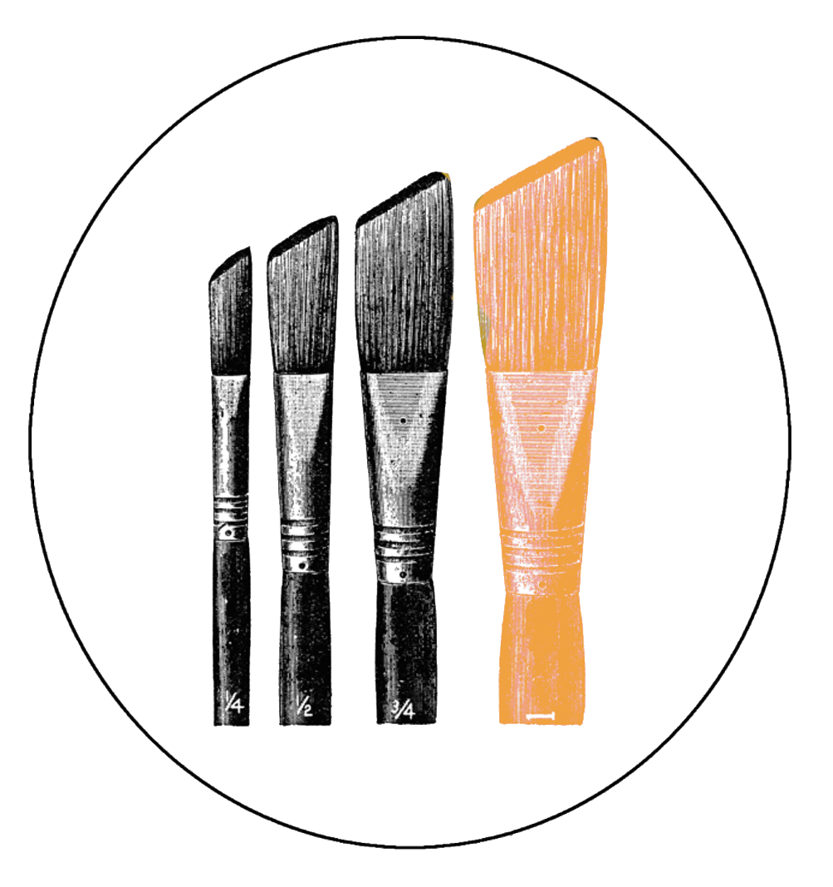

Pinacoteca
- Un retrato
- Con lupa
- Marfil
- Una dedicatoria
- Causa y efecto
- Duelo
- Diario
- Feliz Navidad
- Última voluntad
- Prueba y error
- Starring
- Buen samaritano
- Donde estuvimos
- Gafas
- Fruta
- Tratado sobre la paciencia
- Dádiva
- Otro
- Acordeón
- Gancho de izquierda
- Impostor
- A largo plazo
- El último trago
- A los postres
- Música
- Martina
- Escapada
- Alta médica
- Regalo
- Un cuento de verano
- Praga
- Terminal
- De narices
- Konstantin Schifter. Concierto para Violín nº 16
- ¿Qué tal el día?